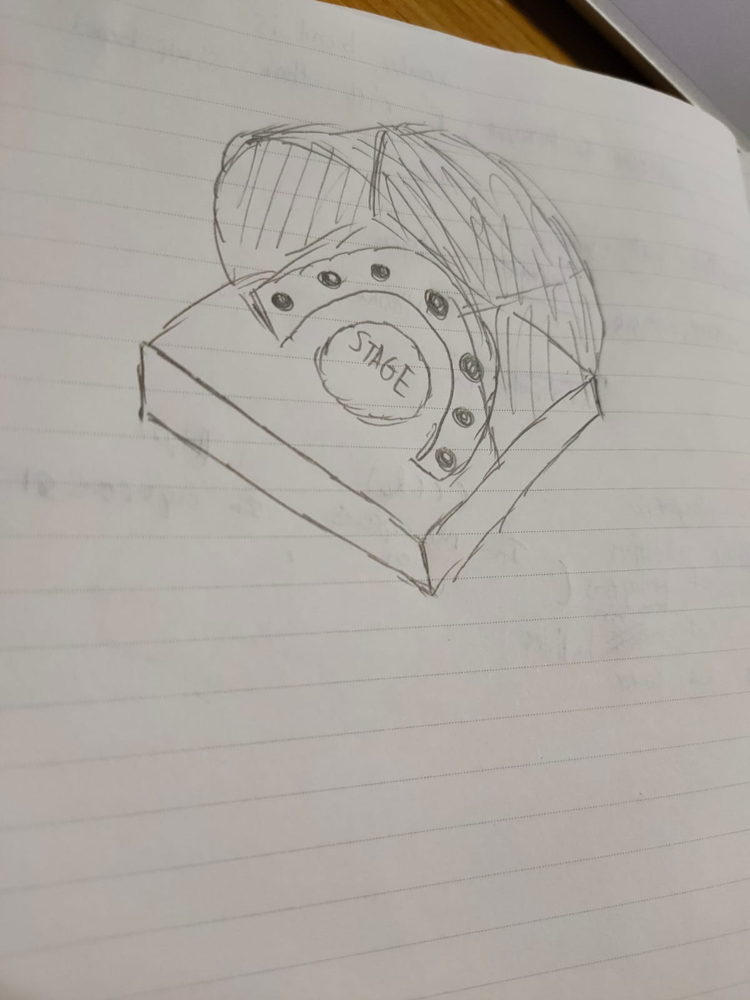

Module Project
Brief idea of what my project is about
With the skills that i have learnt from embedded programming, 3d printing, lazer cutting etc. I plan on making a design which is something that i can be put in my house for decoration purposes, i want my project to be a meaningful one, something that will remind me of what i've learnt from this module for the past semester in Year 2.
Materials needed:
- Arduino uno x 1
- Mini breadboard x 1
- Sound sensor module x 1
- Servo Motor x 1
- LED Lightbulbs (Red, Yellow, Green, White) x 5
- male to male jumper wires
- male to female jumper wires
Sketch of design
For now, since i'm still at the planning stage. My idea would be to make a design where the servo motor would be used as a platform indicated as 'stage' in my sketch where i will attach a circular piece of PLA which is attached to a design that will rotate about the stage. The U-shape surrounding the stage will be a cut out of the 3D design and the 'circled dots' will indicate the placement of the LED lightbulbs. This design is made in a rather concave background so that the when the light flicker in responds to sound vibrations detected from the sound sensor module, the light will be effectively displayed, shining the colours of the different lights onto the Design as it rotates about the stage.